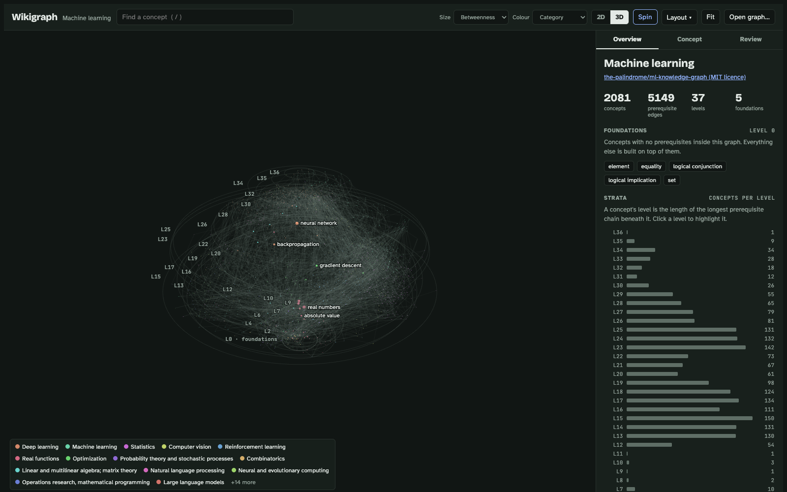

Wikigraph
- When
- 2026
- Stack
- Python 3.9+ (standard library only) for the builder; one self-contained HTML page with three.js for the explorer
- Try it
- fellobello.github.io/wikigraph
- Code
- github.com/fellobello/wikigraph

Why I built it
The Palindrome's "Map of Machine Learning" (video and post, code) lays machine learning out as layers of prerequisites. I wanted the same kind of map for any topic, built automatically from Wikipedia instead of by hand.
What it does
- Builder:
python3 wikigraph.py build "Linear algebra" -o linalg.jsoncrawls Wikipedia and writes a graph file. - Layered 2D and 3D views: each concept sits at its level, the length of its longest prerequisite chain.
- Tracing: highlight a concept's prerequisites or dependents, or get a learning path to it.
- Pillars ranking: the concepts with the highest betweenness centrality, which the most other ideas route through.
- Human review: a Review tab writes a
curation.jsonthat the next rebuild applies.
Interesting parts
Keeping the crawl finite
Following every link on Wikipedia never ends. The builder follows only the links in each article's definition, the first lead paragraph outside parentheses. Those links point at more basic ideas, so the crawl narrows toward foundations instead of spreading sideways. Filters drop people, places, fields of study and lists. A best-first node budget expands the most-cited concepts first, and "bedrock" concepts such as set and equality are never expanded.
Turning a link graph into layers
Raw Wikipedia links contain cycles and many redundant edges. The builder breaks each cycle by keeping edges from the more widely cited concept, then applies transitive reduction: it drops A→C whenever A→B→C exists. Then it computes each node's level, betweenness centrality and PageRank. Offline tests run the whole pipeline against a fake Wikipedia.